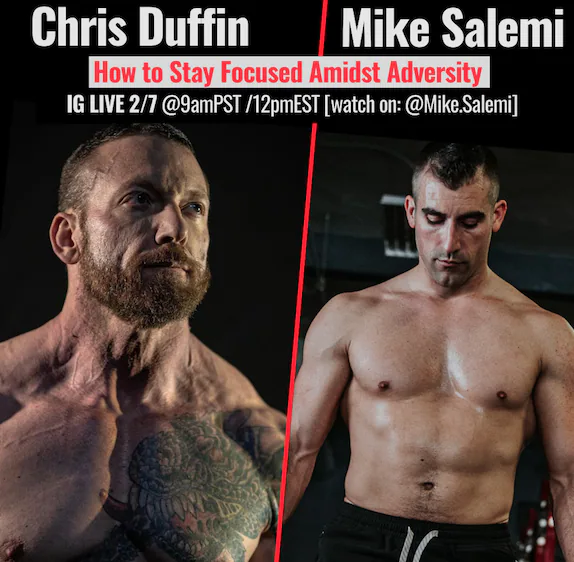

B338 · Holy Smokes! The Guy Who Squatted and Deadlifted 1,000lbs….for REPS!
Hi {first_name},
Believe it or not, yes, there is in fact a human being who can squat AND deadlift 1000lbs...for REPS!
His name is Chris Duffin.
And what's even more impressive about him in my opinion, is that he is MUCH more than purely a great lifter.
I have been in contact with Chris over the past few months, and while I knew about him for years and appreciated his work, it wasn’t until recently that I started learning more about him.
Chris is no stranger to working through challenging adversity in his life. Amidst the adversity he's experienced since childhood, Chris has become a best selling author, engineer, educator, and co-founder of Kabuki Strength.
It takes heart, mind, and spirit to do this, and that's why I am very excited and honored to share that today at 9amPST / 12pmEST I will be interviewing Chris.

I feel his life experience will be very supportive and inspiring to all of us during these wild times.
Tune into Instagram LIVE (@Mike.Salemi), where the topic will be “How to Stay Focused Amidst Adversity."
Hope to see you in a few hours!
Mike
P.S. You're invited! On Feb 20th I am hosting a virtual workshop where you will learn FANTASTIC, detailed postures (called ELDOAs) geared towards reducing pain, compensations in the body, and improving the function of your hips and lower back. If you care about how you feel and perform, you should be there. I'm bringing in ELDOA certifying instructor, Justin Brien, to lead this 90 minute workshop called Pain Free Performance exclusively for my community. Even if you can’t make the live virtual workshop, sign up anyway, trust me. You will have access to the recording and if you only walked away having learned one posture (which takes only one minute a day) I can tell you it will have a positive impact on your life and be well worth it.
Sign up today and take action on having a better functioning body. |